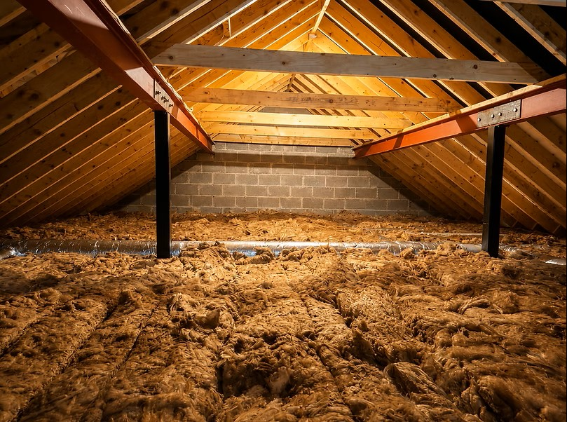

Inspect the attic
We review access, roof construction, ventilation, moisture and existing insulation.

Professionally installed attic insulation can reduce heat loss, improve comfort and help your property perform more efficiently. We assess the attic and recommend a suitable insulation system for the building.
Heat naturally rises, so an under-insulated attic can allow a significant amount of warmth to escape through the roof.
The right insulation approach depends on the construction of the roof, how the attic is used, ventilation requirements, moisture conditions and the condition of any existing insulation.
Ecospec assesses the property before recommending wool, spray foam or another suitable approach.

Mineral wool is commonly installed between and across the attic joists, creating a continuous insulating layer above the rooms below.
It is suitable for many conventional ventilated attics and can often be used to improve an existing layer of insulation where the material is dry, undamaged and correctly positioned.
During installation, care must be taken around ventilation openings, electrical fittings, water tanks, pipework and attic access points. Walkways or raised storage areas may also be required where the attic needs to remain accessible.
Spray foam is applied directly to a suitable roof structure, where it expands to form a continuous layer around the roof timbers.
This approach may be considered where insulation is required at rafter or roof level rather than across the attic floor. It can help reduce air movement through treated areas and bring the roof space within the insulated part of the building.
The roof construction must be assessed before spray foam is used. The condition of the timbers, roofing membrane, moisture levels and ventilation strategy all need to be considered to confirm that the system is appropriate.

We inspect the attic, explain the recommended work and complete the installation carefully.
We review access, roof construction, ventilation, moisture and existing insulation.
We explain whether wool, spray foam or another solution is suitable.
Services, ventilation paths and areas requiring protection are identified before work begins.
The insulation is installed carefully and the completed work is reviewed.

Insulation should not be installed over unresolved leaks, damp, damaged roof components or blocked ventilation paths.
Spray foam in particular should only be used where the roof build-up, membrane, timber condition and ventilation strategy have been assessed and confirmed as suitable.
Eligibility and grant conditions depend on the property and the applicable SEAI scheme. Grant approval should be confirmed before eligible work begins.
Tell us about your property and we will help identify whether wool, spray foam or another insulation approach is suitable.